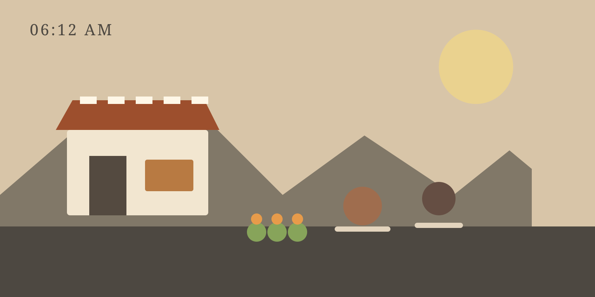

NEIGHBORHOOD JOURNAL · 06:12 AM
The market wakes before the city does.
A visual story about the people, sounds, and small routines that turn an ordinary street into a shared morning ritual.

01 / THE FIRST SOUND
Metal shutters, kettle steam, footsteps.
The street does not open all at once. One shutter rises, then another. Someone drags a wooden crate across the pavement. A kettle clicks into place. These tiny sounds arrive before the traffic and slowly become a soundtrack.
That is what makes the first hour feel different. There is no rush to impress anyone. People are simply preparing to be useful to one another.
“You know the day has started when three different people ask if you have eaten.” — Rahim, fruit seller
02 / SMALL ROUTINES
Familiar gestures create belonging.
A regular customer points toward the usual basket without saying a word. A shopkeeper leaves a stool outside for an older neighbor. A delivery rider knows which doorway will be unlocked first.
The average time our photographer observed from the first shutter opening to the street feeling fully active.
03 / WHY PEOPLE RETURN
The product is not the only thing being sold.
People come for fruit, tea, bread, and groceries. They also come for recognition. A familiar face behind a counter can make an unfamiliar week feel a little more manageable.
Good neighborhoods are built from repeated, ordinary moments.
Maybe that is why the market matters. It is not a landmark. It does not need a giant sign. Its value is hidden inside a collection of small interactions that happen often enough to become part of someone's sense of home.